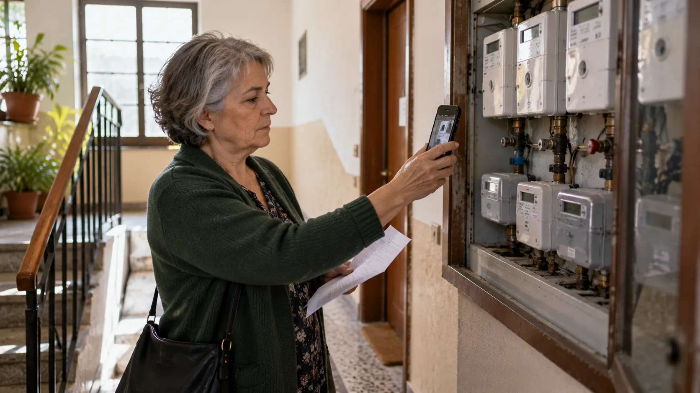

RUBRICA 03 · GUIDA 07 DI 09 · VERIFICA 15 OTTOBRE 2026
Debiti con banche, bollette e altri creditori

Una banca, una società di recupero crediti, il fornitore di luce o il proprietario di casa ti chiede denaro? Prima identifica il creditore, verifica il conto e controlla se esiste una scadenza urgente. Le regole non sono quelle delle cartelle AdeR.
Il primo controllo, prima di pagare
Conserva la richiesta integrale e individua chi chiede i soldi, perché, per quale periodo e in base a quale contratto. Confronta l'importo con le ricevute e controlla se lettere diverse si riferiscono allo stesso debito. Se qualcosa non coincide, chiedi il conteggio dettagliato, scritto e aggiornato.
Tre informazioni da annotare subito: numero della pratica o contratto, data dell'ultimo atto ricevuto, importo richiesto con eventuale termine di pagamento. Non condividere documenti integrali o codici personali con chi ti contatta senza identificarsi.
Decreto ingiuntivo, precetto, pignoramento o intimazione di sfratto richiedono una verifica legale immediata. Il termine può essere breve e dipende dall'atto: reclamare al creditore o chiedere una conciliazione non sospende automaticamente l'opposizione giudiziaria.
1. Quale debito hai davanti?
Contratto con una banca o finanziaria. Controlla capitale residuo, rate, interessi, mora e segnalazioni creditizie.
Fattura di un fornitore o gestore. Controlla contatore, periodo, pagamenti, rettifiche e eventuali rischi di distacco.
Fattura o penale contrattuale di un operatore: per le controversie esiste una procedura specifica AGCOM.
Non è un debito affidato automaticamente ad AdeR: obblighi e tutele dipendono dal rapporto giuridico e dagli atti ricevuti.
La «Situazione debitoria» AdeR non comprende necessariamente questi debiti. Per il quadro completo serve un elenco separato. Guida 02: ricostruire la propria situazione ↗.
2. Prestiti e finanziarie: controlla le rate e parla presto con la banca
Recupera contratto, piano di ammortamento, estratto dei pagamenti, comunicazioni di insoluto e conteggio di estinzione. Chiedi di distinguere capitale scaduto, capitale non ancora scaduto, interessi ordinari, interessi di mora e spese.
Se cominci ad avere difficoltà nel rimborso, la Banca d'Italia raccomanda di contattare la banca tempestivamente. Puoi chiedere di valutare rinegoziazione delle condizioni o altre forme di assistenza, ma la banca non è obbligata ad accettare qualsiasi proposta di riduzione della rata.
Se la rata è in ritardo, valuta anche l'eventuale presenza di segnalazioni nella Centrale dei Rischi (CR) della Banca d'Italia e nei sistemi di informazioni creditizie privati (SIC): sono archivi diversi. Un ritardo non significa automaticamente una segnalazione «a sofferenza», che richiede una valutazione specifica.
Puoi richiedere gratuitamente i tuoi dati CR alla Banca d'Italia. Dal 13 aprile 2026 il Portale dei servizi online è il canale telematico ufficiale; per chi non dispone di SPID o CIE è prevista anche una richiesta con identificazione alternativa. Se trovi dati errati, chiedine la correzione all'intermediario che li ha segnalati.
Banca d'Italia: consulta gratuitamente la tua CR ↗
Prima invia un reclamo scritto all'intermediario e conservane la ricevuta. Se la risposta è insoddisfacente puoi valutare l'ABF; in assenza di risposta devi normalmente attendere 60 giorni, oppure 15 giorni lavorativi per i servizi di pagamento, salve le regole specifiche.
Il ricorso all'Arbitro Bancario Finanziario (ABF) va presentato entro 12 mesi dal reclamo. Se sono trascorsi più di 12 mesi, il sito ABF indica di presentare un nuovo reclamo prima di ricorrere, verificando sempre anche gli altri limiti di ammissibilità. Il contributo è di 20 €, di regola rimborsato quando il ricorso è accolto anche in parte, salvo i casi eccezionali previsti.
L'ABF è accessibile senza avvocato. Per domande che chiedono somme, il limite è 200.000 €; per il solo accertamento di diritti non si applica tale limite. Non tratta operazioni o comportamenti anteriori al sesto anno precedente al ricorso e ha altre esclusioni. Le decisioni ABF non sono sentenze esecutive: gli inadempimenti dell'intermediario sono resi pubblici secondo le regole del sistema. Il ricorso ABF non sospende automaticamente le scadenze di un eventuale giudizio.
Banca d'Italia: che fare quando le rate diventano difficili ↗ · Banca d'Italia: Centrale dei Rischi e correzioni ↗
3. Se il problema riguarda il mutuo della prima casa
Verifica tempestivamente con la banca rate scadute, garanzie e possibilità di sostegno. Il Fondo Gasparrini gestito da Consap può permettere di sospendere temporaneamente le rate del mutuo contratto per l'acquisto della prima casa, in presenza dei requisiti.
Regole ordinarie verificate nel 2026: ISEE non superiore a 30.000 €, mutuo originario fino a 250.000 €, generalmente in ammortamento da almeno un anno, ed evento ammesso verificatosi dopo la stipula e nei tre anni antecedenti la domanda. Fra gli eventi previsti vi sono perdita del lavoro, sospensione dell'attività lavorativa per almeno 30 giorni lavorativi consecutivi, riduzione dell'orario di almeno il 20% per almeno 30 giorni lavorativi consecutivi, oppure riconoscimento di handicap grave ai sensi dell'articolo 3, comma 3, della legge 104/1992, o invalidità civile almeno dell'80%, per il titolare o cointestatario del mutuo secondo la documentazione Consap. Non basta una qualunque percentuale di invalidità.
La sospensione può arrivare complessivamente a 18 mesi, secondo evento e precedenti sospensioni. Non cancella le rate né necessariamente tutti gli interessi. La domanda, con i documenti richiesti, si presenta alla banca che gestisce il mutuo, che la trasmette a Consap. Non confondere questo strumento con il Fondo di garanzia per ottenere un nuovo mutuo prima casa.
Consap: requisiti del Fondo sospensione mutui ↗ · Consap: procedura e documenti ↗
4. Se ti scrive una società di recupero crediti
La società potrebbe riscuotere per conto del creditore originario oppure affermare di essere diventata la nuova titolare del credito in seguito a una cessione: sono situazioni differenti. Non basta l'affermazione telefonica di avere acquistato il credito; chiedi informazioni verificabili sulla titolarità e sulla posizione prima di pagare o firmare un riconoscimento.
- Chiedi ragione sociale, recapiti verificabili e ruolo della società.
- Richiedi il riferimento del contratto originario e l'identificazione del creditore attuale.
- Chiedi le informazioni o i documenti che consentono di verificare il titolo della richiesta e la cessione, quando dichiarata.
- Richiedi un conteggio analitico e verifica i pagamenti precedenti.
- Prima di versare denaro o firmare, verifica che il destinatario del pagamento sia legittimato e ottieni conferma scritta di importo, causale e quietanza.
Non ignorare automaticamente una richiesta perché proviene da un recuperatore, ma non trasferire denaro verso coordinate comunicate soltanto per telefono o messaggio senza averle verificate.
5. Luce, gas e acqua: controlla consumi, letture e reclami
Verifica intestatario, POD o PDR quando presenti, codice cliente, periodo, letture effettive o stimate, conguagli, eventuali depositi, note di credito e ricevute. Una bolletta già pagata o un consumo attribuito a un periodo errato va contestato con i riferimenti esatti.
Per energia elettrica, gas e servizio idrico, nei casi previsti si può eccepire la prescrizione dei consumi risalenti a più di due anni. La tutela non dipende semplicemente dal fatto che una bolletta sia stata emessa due anni fa: bisogna verificare periodo di consumo, esigibilità del credito ed eventuali atti che incidono sulla prescrizione.
Se la fattura riguarda consumi risalenti a più di due anni, individua la relativa voce e chiedi al fornitore o gestore il modulo per eccepire la prescrizione previsto dalle informazioni ARERA. Invia l'eccezione per iscritto e conserva le prove. Non ignorare la bolletta intera quando include anche importi recenti non contestati.
Non aspettare l'interruzione della fornitura: leggi l'avviso di costituzione in mora, verifica termini, bollette oggetto della richiesta e tutele previste. Un semplice reclamo non blocca automaticamente ogni sospensione. Se hai contestato tempestivamente una fattura e rischi il distacco, chiedi assistenza urgente al gestore e verifica le procedure accelerate di conciliazione.
ARERA: prescrizione dei consumi oltre due anni ↗ · ARERA: Sportello per il consumatore ↗
6. Come contestare una bolletta e usare ARERA
Primo passaggio: invia un reclamo scritto al fornitore o gestore, spiegando quale fattura contesti, perché e quali prove alleghi. Conserva data, ricevuta di invio e risposta.
Per le controversie ammesse il Servizio Conciliazione ARERA è gratuito: si può attivare dopo una risposta insoddisfacente, oppure, in caso di mancata risposta, trascorsi 40 giorni per luce e gas, 50 giorni per il servizio idrico e 60 giorni per i rifiuti urbani. Per i rifiuti, il tentativo ha una disciplina differente ed è facoltativo. Sono previste esclusioni e procedure particolari.
In caso di rischio di sospensione per una bolletta tempestivamente contestata, ARERA prevede, quando ricorrono le condizioni, un primo incontro accelerato: non è una garanzia che il distacco sia automaticamente impedito.
Il conciliatore non emette una sentenza. Se viene raggiunto un accordo, nei settori per cui la disciplina lo prevede il verbale sottoscritto ha valore di titolo esecutivo; per il settore dei rifiuti urbani vigono regole particolari e il tentativo resta facoltativo durante il regime transitorio. Prima di firmare verifica impegni, pagamenti e scadenze.
Apri le istruzioni ufficiali del Servizio Conciliazione ARERA ↗
Nel 2026 la soglia ISEE per i bonus ordinari di luce, gas, acqua e rifiuti è 9.796 €; per i nuclei con almeno quattro figli a carico è 20.000 €. Oltre all'ISEE devono essere rispettate le condizioni previste per le forniture. Normalmente i bonus economici sono riconosciuti attraverso la DSU/ISEE e le verifiche automatiche, ma non cancellano gli arretrati. Per il bonus sociale rifiuti, quando spettante, la riduzione del 25% della TARI o tariffa corrispettiva è riconosciuta nell'anno successivo a quello dell'ISEE sottosoglia, secondo le verifiche del gestore; non rappresenta quindi una riduzione immediata della bolletta corrente. ARERA: tempi e regole del bonus rifiuti ↗.
Il bonus elettrico per disagio fisico è distinto: richiede apparecchiature elettromedicali salvavita previste dalla normativa e certificazione della struttura sanitaria competente. Il solo verbale di invalidità non basta e per questo bonus non è richiesto l'ISEE. Va presentata un'apposita domanda nei canali indicati da ARERA.
ARERA: requisiti economici 2026 ↗ · ARERA: bonus disagio fisico ↗
7. Bollette telefoniche, Internet e servizi digitali
Per le controversie con l'operatore di telefonia fissa, mobile o accesso a Internet, conserva contratto, fatture, disdetta, prova di restituzione degli apparati e reclamo. Puoi attivare ConciliaWeb di AGCOM, gratuitamente per le controversie ammesse. La piattaforma riguarda i servizi di comunicazione elettronica, non automaticamente ogni abbonamento o acquisto digitale.
AGCOM prevede anche provvedimenti temporanei in determinate situazioni urgenti, ad esempio per evitare la perdita di un numero o una sospensione illegittima durante la procedura. Non confondere ConciliaWeb con il servizio ARERA, che tratta settori differenti.
AGCOM: quali controversie si possono trattare ↗ · Apri ConciliaWeb ufficiale ↗
8. Telefonate insistenti o minacce: i limiti del recupero crediti
Un creditore può legittimamente sollecitare un debito esistente, ma non può usare qualunque metodo. Il Garante Privacy vieta, tra le altre condotte, la divulgazione ingiustificata del mancato pagamento a familiari, vicini o colleghi e le modalità invasive che rivelino indebitamente la condizione del debitore.
Annota data, numero chiamante, società dichiarata e contenuto del contatto; conserva lettere, messaggi e registrazioni lecitamente ottenute. Puoi contestare i comportamenti lesivi al titolare del trattamento e, nei casi appropriati, rivolgersi al Garante Privacy o richiedere assistenza legale.
La violazione delle regole sulla privacy non cancella da sola il debito. Il Garante può esaminare il trattamento dei dati, ma non decide se il credito esiste o quanto sia dovuto: queste contestazioni seguono altri canali. Se le comunicazioni contengono vere minacce o molestie, valuta anche la tutela legale appropriata.
9. Arretrati di affitto e condominio
Per l'affitto, confronta contratto, canoni scaduti, ricevute e spese accessorie. Se non riesci a pagare, contatta subito il proprietario per una proposta scritta e realistica, specificando gli importi e le date. Un accordo privato non cancella automaticamente un procedimento giudiziario già avviato.
Se hai ricevuto un'intimazione di sfratto per morosità con citazione per la convalida, non ignorare l'udienza: il giudice può convalidare lo sfratto se ricorrono le condizioni e non ti opponi. Serve assistenza legale tempestiva, anche per verificare se il caso concreto consente rimedi o termini di grazia.
Per spese condominiali, chiedi il dettaglio delle quote, le delibere e le ricevute all'amministratore. Se arriva un decreto ingiuntivo, verifica immediatamente la scadenza e il tipo di opposizione.
Ministero della Giustizia: convalida dello sfratto per morosità ↗
10. Come valutare un piano di rientro o un saldo e stralcio
Un piano di rientro è un accordo per pagare in più scadenze. Un eventuale saldo e stralcio è una transazione in cui il creditore accetta una somma inferiore o diversa, alle condizioni concordate: non è un diritto automatico del debitore.
Prima di firmare fai verificare per iscritto: credito e titolo, importo iniziale, totale dell'accordo, rate e date, coordinate del beneficiario, effetti sull'eventuale azione giudiziaria, conseguenze di un ritardo e quietanza finale liberatoria.
Non firmare un riconoscimento di debito, un nuovo contratto o una transazione senza capirne gli effetti, anche in materia di prescrizione, rinunce e garanzie. Un pagamento parziale non certifica che tutto il debito sia chiuso: serve un accordo chiaro.
Valuta le entrate effettivamente disponibili meno affitto, alimentazione, energia, trasporti indispensabili, farmaci, spese periodiche e altri obblighi. Se la rata proposta mette a rischio queste necessità, chiedi una soluzione diversa o un'analisi complessiva della crisi.
11. Esempio pratico: due richieste, una sola somma da ricostruire
Una finanziaria chiede 2.400 €. Conservi ricevute per 600 €, ma ricevi anche un sollecito da una società di recupero crediti. Prima di aggiungere le due richieste, controlli se si riferiscono allo stesso contratto e chiedi l'estratto aggiornato.
2.400 meno 600 non equivale necessariamente al saldo giuridicamente dovuto: occorre verificare l'imputazione dei pagamenti, le eventuali rate non scadute, gli interessi e i costi che possono essere legittimamente richiesti. Solo dopo puoi valutare un accordo.
12. Se i debiti sono troppi e non riesci più a sostenerli
Se hai diversi creditori e anche una piccola rata renderebbe impossibile coprire le spese essenziali, non affrontare ogni richiesta isolatamente. Esistono strumenti previsti dal Codice della crisi d'impresa e dell'insolvenza per alcuni debitori non in grado di adempiere regolarmente, con il supporto di un Organismo di composizione della crisi da sovraindebitamento (OCC) quando previsto.
Non sono una cancellazione automatica e possono avere costi, requisiti e conseguenze rilevanti. Prosegui con la Guida 08 — Sovraindebitamento ↗.
Ministero della Giustizia: Organismi di composizione della crisi ↗
Caso pratico: tre creditori, tre canali diversi
Esempio inventato. Hai una rata bancaria che non riesci a pagare, una bolletta elettrica di cui contesti i consumi e una fattura telefonica per un contratto già disdetto. Una sola lettera uguale per tutti e tre sarebbe inefficace.
- Banca: recupera piano di ammortamento e conteggio residuo, scrivi un reclamo preciso e valuta l'Arbitro Bancario Finanziario se la controversia rientra fra quelle ammissibili. Una difficoltà economica non obbliga la banca ad accettare una proposta.
- Luce o gas: confronta letture, POD/PDR, periodo fatturato e versamenti. Invia un reclamo scritto; poi, nelle condizioni previste, puoi accedere al Servizio Conciliazione ARERA. Senza risposta, il termine ordinario è 40 giorni per luce e gas, 50 per l'acqua e 60 per i rifiuti.
- Telefonia: allega disdetta, ricevute e prove di restituzione degli apparati; verifica ConciliaWeb AGCOM per le controversie ammesse.
- Se arrivano atti giudiziari: il reclamo o la conciliazione non sostituiscono l'opposizione nel relativo termine; consulta tempestivamente un avvocato.
Regola di prudenza: non inviare soldi a una società di recupero crediti solo sulla base di una telefonata. Chiedi titolo del credito, estremi e legittimazione a incassare, oltre a conferma scritta di qualsiasi eventuale accordo.
Per un aiuto concreto rivolgiti al servizio competente nel tuo territorio: CAF per adempimenti fiscali, patronato per previdenza, OCC o professionista abilitato per procedure di sovraindebitamento e controversie.